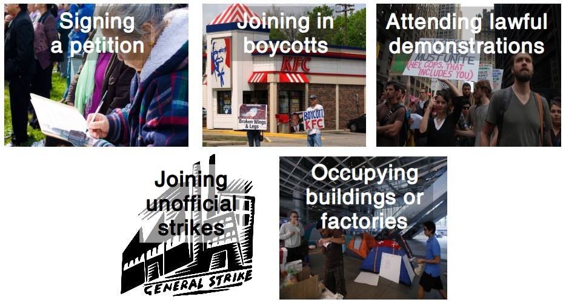

How to explore participatory practices in the everyday life of young people?
Pitfalls in the study of young people's participatory practices
A generalized social phenomenon?
Young people in Denmark today are indifferent and lazy. They do not bother with politics and do not take responsibility for the development of society. This is assertions that we regularly encounter in the public debate. […] On the contrary, we are experiencing a generation of young people who are ambitious and committed - and fully involved in society.
Tuborg Fondet, Mandag Morgen og Netværket af Ungdomsråd (2018). Hvem sagde ung og uengageret? Nye perspektiver på unges demokratiske deltagelse
A dichotomous phenomenon?

Jensen, Jakob Linaa (2018). Vejen til demokratisk deltagelse. Danmarks Medie- og Journalisthøjskole
A phenomenon observed with 'old' categories?

Variables regarding political action in European Value Survey 1981-2008
How to address the pitfalls?
The photo elicitation interview
Benefits:
- A perspective from the youth
- An insight into the complexity of participatory practices
- Provide rich accounts of different types of participatory practices
Challenges:
- Selection bias
- Interview technique
- A needle in a hay stack
The societal and political aspect of the furry fandom?

"[Politics] is what my father complain about when nothing is done and something like that. And I also think it doesn't sound very interesting […]"
"I like do it in the public […] I just think it's really, really nice that a little child sees you and get really happy and want a hug and high-five and picture […]"
"[…] I also think that some of my friends have experienced something about 'ok, you are not allowed to do this because it says this and this. So you can say it is a little bit related, but I have not experienced it yet which I'm quite glad about. But it will very likely come soon, I think."